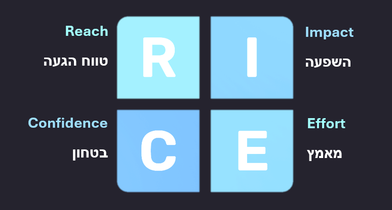
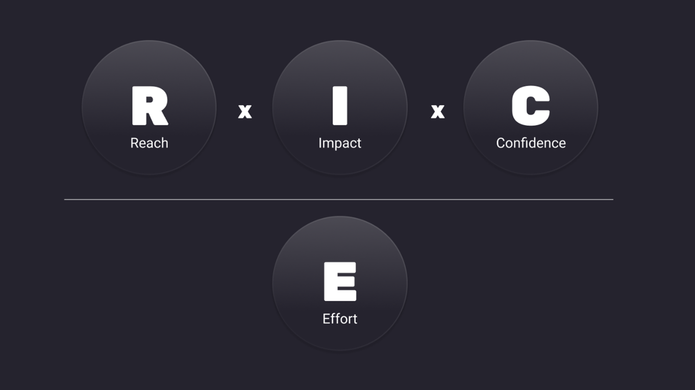
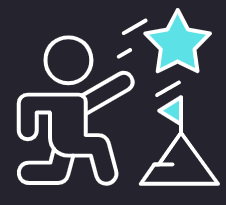

שיטת RICE היא כלי לתיעדוף משימות, פרויקטים או רעיונות על סמך ארבעה מרכיבים:
טווח הגעה
רכיב המכמת את מספר האנשים שיושפעו מהמשימה או הפרויקט. עוזר לאמוד את היקף ההשפעה והטווח הפוטנציאלי של הרעיון.
איך נחשב?
טווח הגעה נמדד במספר אנשים/אירועים בכל פרק זמן. לדוגמה - "לקוחות לרבעון" או "עסקאות לחודש". עד כמה שניתן, השתמשו במדידות אמיתיות במקום להמציא.
לדוגמה
500 לקוחות מגיעים לנקודה זו בתהליך ההרשמה מדי חודש, ו-30% בוחרים באפשרות זו. טווח ההגעה הוא 500 × 30% × 3 = 450 לקוחות לרבעון.
השפעה
רכיב המודד את מידת ההשפעה שתהיה למשימה או לפרויקט על המשתמשים. מעריך עד כמה משמעותי יהיה השינוי וכיצד הוא מתיישב עם היעדים הארגוניים.
איך נחשב?
העריכו את ההשפעה על אדם בודד בעזרת שיטת הניקוד הבאה:
3 = השפעה מסיבית
2 = השפעה גבוהה
1 = השפעה בינונית
5 = השפעה נמוכה
25 = השפעה מינימלית
בטחון
רכיב המשקף את רמת הוודאות שהמשימה או הפרויקט ישיגו את ההשפעה הרצויה.
איך נחשב?
100% זה "ביטחון גבוה", 80% זה "בינוני", 50% זה "נמוך". כל דבר שמתחתיו הוא הימור מוחלט.
מאמץ
רכיב המעריך את המשאבים, כולל זמן, כסף וכוח אדם, הנדרשים להשלמת המשימה או הפרויקט. משקלל בתוכו את מורכבות היישום ואת המכשולים הפוטנציאליים.
איך נחשב?
המאמץ מוערך כמספר "חודשי אדם" - העבודה שחבר צוות אחד יכול לעשות בחודש.
לדוגמה
פרויקט שייקח כשבוע של תכנון, 1-2 שבועות של עיצוב ו-2-4 שבועות של זמן הנדסה, יקבל ציון מאמץ של 2 חודשי אדם.
לאחר שהערכנו את ארבעת הגורמים, נחבר אותם לציון אחד בנוסחה פשוטה:
הציון שנקבל יאפשר לנו לערוך השוואה זריזה בין פרויקטים ולתעדף אותם בצורה טובה ושיטתית.
כך הצוות שלנו יתמקד בפרויקטים בעלי ההשפעה הפוטנציאלית הגבוהה ביותר, ובכך נמקסם את היעילות שלנו ונניב תוצאות משמעותיות.
